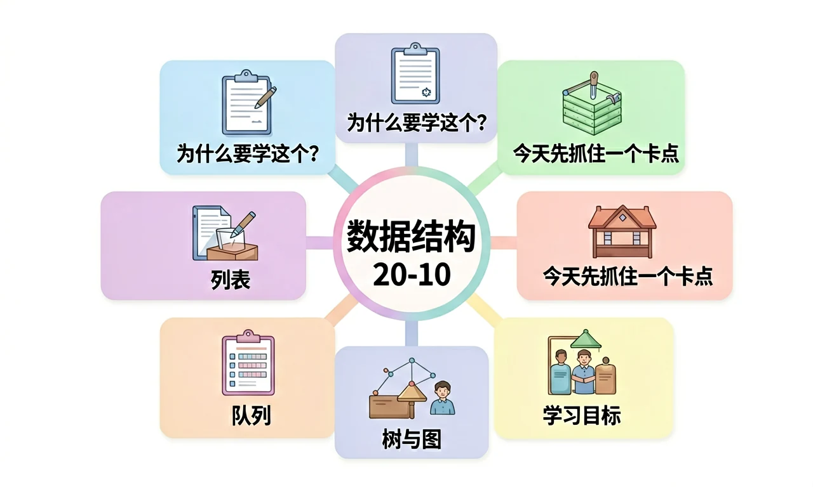

Worked Example
过程图：先看变量，再看规则，最后验证输出。
示例推理：从真实任务到程序模型
第一步，识别输入变量，例如“数据规模”和“关系复杂度”。第二步，写出处理规则，说明程序如何把输入转化成“结构选择压力”。第三步，用一个具体数据检验结果是否合理。这样做的好处是：答案不再只是背概念，而是能解释为什么这个算法或结构在当前情境中成立。
为什么同一批数据，换一种组织方式，程序效率和思路都会改变？

已经知道：你见过程序代码，也知道计算机能自动处理数据。
但问题是：真实系统不是背语法，而是把现实任务抽象成变量、规则、结构和结果。学习时要把每个词都落到可观察数据上，避免只会背术语。
所以学：校园快递站要管理包裹入库、排队取件、楼层分类和路线推荐，不同任务需要不同结构。
选择后，AI 学伴会围绕你的卡点给提示。
浏览器后退功能最接近哪种结构？
规范定义：数据结构是指数据元素之间的组织方式，决定访问、插入、删除和查找的策略。
机制解释：列表适合顺序访问，栈后进先出，队列先进先出，树表达层级，图表达网络关系。
从生活实例出发，概述算法的概念与特征，运用恰当的描述方法和控制结构表示简单算法。
掌握一种程序设计语言的基本知识，使用程序设计语言实现简单算法。
依据解决问题的需要，设计和表示简单算法；掌握一种程序设计语言的基本知识，利用程序设计语言实现简单算法，解决实际问题。
题目给了什么输入和现象？
变量、规则、结构分别是什么？
为什么这个规则会产生该结果？
换一个场景还能不能用？
列表像书架，栈像盘子堆，队列像排队，树像目录，图像地铁线路。
调整数据规模和关系复杂度，观察结构选择压力。请用“变量、规则、结果”三句话解释。
拖动滑块后，写出变量如何影响结果。
把所有问题都塞进列表，忽略了后进先出、先进先出或层级关系。
只看表面语法，没检查前提和数据流。
先问变量是什么，再问规则是否成立。
第一步，识别输入变量，例如“数据规模”和“关系复杂度”。第二步，写出处理规则，说明程序如何把输入转化成“结构选择压力”。第三步，用一个具体数据检验结果是否合理。这样做的好处是：答案不再只是背概念，而是能解释为什么这个算法或结构在当前情境中成立。
列表像书架，栈像盘子堆，队列像排队，树像目录。 请把本课方法迁移到一个新的校园场景：选课、借书、门禁或成绩查询。你的方案至少写出三个部分：数据从哪里来，规则如何处理，结果怎样被检查。如果发现结果异常，要能回到变量和规则重新诊断。

不要根据题目里的表面词汇机械套用。先看数据是否有多个取值，再看规则是否需要选择，最后看任务是否要重复处理一批对象。若变量、规则、结果三者能互相解释，这个程序模型才是可验证的；若只能说出一个名词，就说明理解还停留在表层。 进一步检查时，请把自己的答案拆成“输入是什么、判断依据是什么、输出如何验证”三句话；如果三句话中任意一句说不清，就回到变量和规则重新修改。
调试不是随便改代码，而是回到输入、规则和输出三处检查。先固定输入，看输出是否稳定；再改变一个变量，观察结果是否符合规则；最后解释异常来自数据、条件还是流程。这个步骤能帮助你把“会运行”提升为“会解释”。 进一步检查时，请把自己的答案拆成“输入是什么、判断依据是什么、输出如何验证”三句话；如果三句话中任意一句说不清，就回到变量和规则重新修改。
一个合格答案不能只写概念名称。你要能说明：哪些数据被输入，哪个规则被调用，结果如何产生，怎样检查是否合理。用这四个问题检查自己的方案，就能把零散术语转化为解决真实问题的算法表达。 进一步检查时，请把自己的答案拆成“输入是什么、判断依据是什么、输出如何验证”三句话；如果三句话中任意一句说不清，就回到变量和规则重新修改。
视频回顾本课主线：真实场景、概念定义、变量模型、迁移应用。
只要记住定义，就一定能解决真实程序任务。这个说法对吗？
为“浏览器后退、食堂排队、文件夹目录、地铁换乘”分别选择数据结构。
提交后会检查是否包含变量、规则和结果。
说出本课一个定义。
分析一个校园系统变量。
设计并验证一个方案。
一个完整答案最应该包含什么？
列表是最基础的数据结构之一，用于存储有序的元素集合。例如购物清单['牛奶', '面包', '鸡蛋']就是一个典型列表，元素可通过索引（如清单第2项）快速定位。在Python中，列表用方括号表示，支持动态增删（append/pop）和切片操作。与数组不同，列表不要求元素类型一致，如[1, '苹果', True]也是合法列表。重要特性包括：1) 可变的（mutable）——内容可修改 2) 保持插入顺序 3) 允许重复值。实际应用场景包括学生成绩管理、待办事项跟踪等。
栈（Stack）遵循LIFO（Last In First Out）原则，就像食堂叠放的餐盘——最后放入的盘子最先被取走。关键操作有push（入栈，如放盘子）和pop（出栈，如取盘子）。浏览器后退功能就是栈的典型应用：每访问新页面时URL入栈，点击后退时从栈顶弹出。编程中栈用于函数调用（调用栈）、括号匹配检查等。特别注意栈顶指针（总指向最新元素）和栈空/满的判断。与列表不同，栈只允许在一端操作，这种约束带来特定问题的高效解法。
队列（Queue）遵循FIFO（First In First Out）原则，如同超市结账排队——先来的人先结账。基本操作包括enqueue（入队，排到队尾）和dequeue（出队，队首离开）。打印机任务调度、消息队列都是队列的应用实例。特殊变体包括：1) 双端队列（两端都可操作）2) 优先队列（按优先级出队）。与栈的关键区别在于操作端不同：队列是尾进头出，而栈是单端进出。实现时需注意队首指针（front）和队尾指针（rear）的移动逻辑，避免假溢出。
树（Tree）模拟层级关系，如公司组织架构：CEO是根节点，各部门是子节点。基本术语包括：根（最顶层节点）、叶子（无子节点的节点）、深度（到根的层数）。二叉树是特殊树结构，每个节点最多有两个子节点（左/右子树），常用于实现高效搜索（二叉搜索树）。文件系统是树的典型应用——文件夹是节点，文件是叶子。遍历方式有：前序（根→左→右）、中序（左→根→右）、后序（左→右→根），不同顺序影响处理节点的时机。
图（Graph）由顶点（Vertex）和边（Edge）组成，可表示社交网络（顶点是用戶，边是好友关系）。分有向图（边有方向，如微博关注）和无向图（边无方向，如微信好友）。权重图（如地图导航中带距离的路径）是特殊类型。关键概念包括：度（顶点连接边数）、路径（顶点序列）、连通性（任意两点有路径）。存储方式有：1) 邻接矩阵（二维数组）适合稠密图 2) 邻接表（链表集合）适合稀疏图。算法应用包括最短路径（Dijkstra）、推荐系统（PageRank）等。
虽然列表和链表（Linked List）都存储线性数据，但实现原理迥异：列表用连续内存（类似货架，通过索引直接定位），而链表通过节点指针串联（类似寻宝游戏，每个线索指向下一个）。链表插入/删除更快（O(1)），但随机访问慢（O(n)）。实际案例对比：1) 列表适合频繁查询的场景（如学生名册） 2) 链表适合动态增减的场景（如音乐播放列表）。特殊链表类型包括：双向链表（可向前/后遍历）、循环链表（尾节点指向头节点）。内存分配方式决定了它们的性能特征。
树结构天然适合递归处理，因为子树本身就是树。例如计算二叉树深度可定义为：1 + max(左子树深度, 右子树深度)。这种分而治之的策略也体现在文件系统遍历中——处理文件夹等价于处理其子文件夹和文件。递归三要素：1) 基准条件（如空树深度为0）2) 递归调用（处理子树）3) 向基准收敛（问题规模减小）。注意栈溢出风险（过深递归）和重复计算问题（如斐波那契数列），后者可通过备忘录（memoization）优化。递归思维是理解树操作的关键。
选择数据结构本质是对现实问题的抽象建模。例如：1) 地铁线路图→图结构（站点为顶点，轨道为边）2) 撤销操作→栈结构（记录操作历史）3) 医院挂号→优先队列（急诊优先）。设计时需考虑：操作频次（查询多还是修改多）、数据规模、关系复杂度等。混合结构也很常见：社交网络可能同时使用图（关系）、树（分组）、列表（动态消息）。好的映射能大幅提升算法效率，如用哈希表加速查找、用堆处理Top K问题。这种建模能力是计算思维的核心。
1. 你如何用数据结构描述浏览器多个标签页的关系？2. 快递分拣系统应该采用哪种结构保证先到先处理？3. 家族族谱最适合用什么结构表示？
1. 判断：栈的pop操作和队列的dequeue操作效果相同吗？2. 二叉树的中序遍历顺序是什么？3. 地图导航中求最短路径应该用什么图算法？
常见误区：1) 错认为链表随机访问效率高（实际需从头遍历）2) 混淆树的高度和深度（根节点深度为0，高度为整棵树层数）3) 忽视栈溢出风险（递归过深导致崩溃）。诊断方法：通过具体操作步骤的动画演示，对比不同结构的性能差异。
迁移挑战：设计一个校园导航系统，要求：1) 分析应采用的图结构类型（有向/无向？加权否？）2) 解释如何存储建筑和路径信息 3) 探究最短路径算法的选择依据（考虑实时人流因素）。
先独立作答，再点选项查看对错与错因。
快递站临时存放退货包裹的区域最适合用什么数据结构？
下列哪项是图的典型应用场景？
用二叉树组织包裹分类检索时，根节点应是：
快递站常规取件采用____结构确保先到的包裹先被取走
答案：队列
队列的先进先出(FIFO)特性符合公平性原则
在树结构中，没有子节点的末端元素称为____
答案：叶子节点
树形结构的末端节点类比植物叶子
关于栈的特性描述正确的是：
比较列表、队列、二叉树三种结构处理2000件包裹的耗时